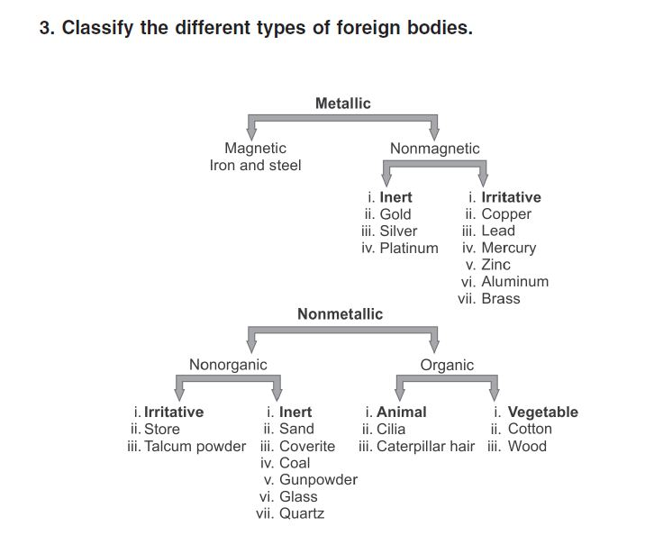

Classifications in Ophthalmology
CLASSIFICATION
CLASSIFICATION OF KERATOREFRACTIVE SURGICAL PROCEDURES
Red-green color vision deficiency:
Red-Green color vision defects fall into two categories depending on which cone class does not contribute to color vision. The noncontributing cone class is indicated by the prefixes:
Protan-for absence of L cone contribution to vision.
Deutan-for absence of M cone contribution to vision.
Further categorization of color vision defects depends on whether the remaining color vision is based on two (dichromacy) versus three (anomalous trichromacy) spectrally distinct types of cones. The suffix -opia denotes dichromacy. The suffix -anomaly denotes anomalous trichromacy in which two of the cone classes are more similar in spectral sensitivity than the corresponding normal cones:
Deuteranopia. color vision mediated by L and S cones.
Protanopia. color vision mediated by M and S cones.
Protanomaly. color vision mediated by S and two spectrally distinct classes of M cone.
Deuteranomaly. color vision mediated by S and two spectrally distinct classes of L cones
International Clinical DR Scale
|
International Classification Level of
DR |
ETDRS Level of DR |
|
No apparent retinopathy |
Level 10: DR absent |
|
Mild NPDR |
Level 20; very mild NPDR |
|
Moderate NPDR |
Levels 35, 43, 47; moderate NPDR |
|
Severe NPDR |
Levels 53A-E; severe to very severe
NPDR |
|
PDR |
Levels 61,65,71,75,81,85; PDR,
high-risk PDR, very severe or advanced PDR |
International Clinical DME Scale
|
Disease Severity Level |
Findings |
DME vs. ETDRS scale |
|
DME apparently absent |
No apparent retinal thickening or hard
exudates (HE) in posterior pole |
No DME |
|
DME apparently present |
Some apparent retinal thickening or HE
in posterior pole |
Mild DME: some retinal thickening or
HE in posterior pole but distant from center of the macula (ETDRS: DME but
not CSME) |
|
Moderate DME: retinal thickening or HE
approaching the center but not involving the center (ETDRS: CSME) |
||
|
Severe DME: retinal thickening or HE
involving the center of the macula (ETDRS: CSME, center involved) |
Coats' Disease
type I included cases of abnormal exudation without apparent vascular changes;
type II included both exudation and abnormal vessels; and
type III exhibited exudation surrounding a large retinal angioma.
Drusen
Small drusen have been defined in most studies as having a greatest linear dimension of less than 50 μm or less than 63 μm in diameter.
Large:
64 to >125 μm (medium),
125 to <250 μm (large), and
≥250 μm (very large).
AMD
AREDS has provided the following clinical classification which can be used to describe adults at risk for AMD or vision loss from AMD:
• No AMD. Absence of any drusen or presence of a few small drusen (>63 μm diameter drusen occupying >125 μm diameter circle [equivalent to 5-15 small drusen]) in the absence of any RPE abnormalities or any later stages of AMD.
• Early AMD. Extensive small drusen (occupies at least 125 μm diameter circle), or nonextensive medium size drusen (63 to >125 μm diameter drusen) with or without pigment abnormalities (increased pigment or depigmentation) and no other later stages of AMD.
• Intermediate AMD. Extensive medium drusen (occupying an area of at least 360 μm diameter circle, which is equivalent to 20 drusen) if the boundaries are indistinct or occupying an area of 656 μm diameter circle (equivalent to 65 drusen) if the boundaries are distinct or at least one large druse (≤125 μm, approximately the width of a retinal vein as it crosses the optic nerve) or the presence of GA that spares the foveal center (nonfoveal GA).
• Advanced AMD. Geographic atrophy involving the center of the fovea or CNV or disciform scar.
Finger Classification of Radiation Retinopathy
Stage 1 (Findings Are Limited to Outside the Macula)
Cotton wool spots
Retinal hemorrhages
Retinal microaneursyms
Ghost vessels
Exudate
Uveal effusion
Choroidal atrophy
Choroidopathy
Retinal ischemia <5 DA
Stage 2 (Findings from Stage 1 but Found Within the Macula)
Stage 3 (Any Stage 1–2 in Addition to the Following)
Retinal vascularization
Macular edema
Stage 4 (Any Stage 1–3 in Addition to the Following)
Vitreous hemorrhage
Retinal ischemia >5 DA
Classification of Giant Retinal Breaks
1.
Giant retinal tear (90° or more)
Extent in degrees (90–360) or clock hours (3–12)
Location (superior, temporal, nasal, inferior)
Configuration
Giant tear without detachment
Giant tear with detachment with
Flat or undisplaced posterior flap
Rolled posterior flap
Inverted posterior flap
Associated with posterior extensions (radial rips) at or within the tear margins
Associated proliferative vitreoretinopathy (absent to severe)
Cause (e.g., spontaneous, trauma, postoperative, systemic syndrome)
2.
Giant dialysis
3.
Giant retinotomy
Stickler's syndrome
Type 1 Stickler's syndrome is characterized by a membranous vitreous appearance and has been associated with mutations in the COL2A1 gene;
type 2 Stickler's syndrome manifests a different beaded vitreous phenotype and is caused by COL11A1 mutations.
In addition, one other group of Stickler's syndrome has only systemic abnormalities. This non-ocular type 3 Stickler's syndrome, with a phenotype displaying characteristic systemic abnormalities such as facial abnormalities, cleft palate, hearing loss, and arthropathies, but without high myopia, vitreoretinal degeneration, or retinal detachments, is caused by mutations in COL11A2,[26–28] a gene which is not expressed in ocular tissue.
Spheroid degeneration
Spheroid degeneration has been classified into three basic types.
Type 1 occurs bilaterally in the cornea without evidence of other ocular pathology.
Type 2, or secondary, spheroid degeneration occurs in the cornea in association with other ocular pathology.
Type 3 is the conjunctival form of the degeneration and may occur concurrently with types 1 and 2.
BRVO
according to site of blockage,
(A) Major at the disc;
(B) major away from the disc;
(C) minor macular;
(D–F) peripheral not involving the macula
The Werner
Classification of Eye Findings in Graves’ Disease
“NO SPECS”
No signs or symptoms
Only signs
Soft tissue involvement (signs and symptoms)
Proptosis
Extraocular muscle involvement
Corneal involvement
Sight loss (optic nerve compression)
Hughes Classification for chemical injuries
Mild :- Good prognosis
Erosion of corneal epithelium, faint haziness of cornea
No ischemic necrosis of conjunctiva or sclera
Moderately severe :- Guarded prognosis
Corneal opacity blurs iris details
Minimal ischemic necrosis of conjunctiva and sclera
Very severe : Poor prognosis
Blurred pupillary outline
Blanching of conjunctiva and sclera
Roper hall (ballen) classification
Grade I : Excellent prognosis
Corneal epithelial damage
No ischemia
Grade II : Good prognosis
Cornea hazy but iris details visible
Ischemia affects <1/3 of limbus
Grade III : Guarded prognosis
Ischemia affects 1/3-1/2 of limbus, stromal haze
Grade IV : Poor prognosis
Ischemia affects > ½ of limbus, cornea opaque
COLOBOMA
Ida
Manns classification(1937)
1-above the optic disc
2-superior border of optic disc
3-seperated from the optic disc by normal narrow area of retina
4-inferior crescent below the disc
5- isolated gap in the line of fissure
6-area of pigmentary disturbance
7-extreme peripheral coloboma
Lingam Gopal’s Optic Disc in Fundal Coloboma:
Six types of disc involvement were identified:
(1) normal disc outside fundus coloboma (27.8%);
(2) disc outside the fundus coloboma and abnormal (10.4%);
(3) disc outside the fundus coloboma and independently colobomatous (8.9%);
(4) disc within the fundus coloboma and normal (5.0%);
(5) disc within the fundus coloboma and colobomatous (44.3%); and
(6) disc shape not identified but blood vessels seen emanating from the superior border of the large fundus coloboma (2.9%).
Visual acuity was better in types I, II, and III compared with IV, V, and VI. Microphthalmos was more common with the more severe anomalies. High myopia was more common in the less severe anomalies.
Accommodative Esotropia
Von Noorden classified Accommodative Esotropia on the basis
of underlying etiology as
1. Refractive
Accommodative Esotropia
2. Non-refractive
Accommodative Esotropia
3. Hypo
Accommodative Esotropia
4. Partially
Accommodative Esotropia
The Classification of Eye Movement Abnormalities and
Strabismus[2]
(CEMAS) group classified and defined this entity as-
Accommodative Esotropia
· Pure
Refractive: esotropia eliminated by hyperopic spectacles
· Non-Refractive:
esotropia at near only and eliminated with plus lenses at near,
e.g. bifocal
· Mixed: esotropia
at distance and greater at near associated with hyperopia and responds to hyperopic
correction at distance with bifocal for near
Mixed (Partially Accommodative)
Esotropia
Hyperopia with incomplete response to spectacles and
bifocals.
Sturge
Weber Syndrome
The Roach Scale is used for classification, as follows:
- Type I - Both facial
and leptomeningeal angiomas; may have glaucoma
- Type II - Facial
angioma alone (no CNS involvement); may have glaucoma
- Type III - Isolated
LA; usually no glaucoma
normal
posterior vitreous detachment:
_ Stage 0: No PVD (seen in 29% of subjects)
_ Stage 1: Incomplete perifoveal PVD in up to 3 quadrants (seen in 47.8%)
_ Stage 2: Incomplete perifoveal PVD in all quadrants with residual
attachment to the fovea, optic nerve, and mid-peripheral retina
_ Stage 3: Incomplete PVD over the posterior pole with residual attachment
to the optic nerve and mid-peripheral retina (1.9%)
_ Stage 4: Complete PVD identified biomicroscopically but not with OCT due to instrument limitation (8.6%)
IOFB Classification

Laser Classification
Lasers are divided into four “classes” based on their strength of output.
Class 1 lasers, with a maximum output that is <0.4 mW, are considered the safest lasers and are believed incapable of causing damage even if viewed for long periods of time.
Class 2 lasers have a maximum output <1 mW. These are also felt to be extremely unlikely to result in ocular injury because of protective mechanisms conferred by the body’s natural blink response and aversion reflexes.
Class 3A lasers have a maximum output between 1 mW and 5 mW, and although they cannot cause immediate eye injury, they can induce damage if stared directly at for sustained periods of time. Most laser pointers that are available in the United States are class 2 or class 3A lasers.
Class 3B lasers are much more powerful, with a maximum output between 5 mW and 500 mW. These are believed to be capable of producing ocular damage immediately upon viewing. Although these lasers are illegal in some countries, they can be obtained quite easily via the Internet.
Class 4 lasers are the most powerful lasers, boasting a maximal output >500 mW. These are typically used in military and occupational settings, such as laser shows. They are capable of producing extensive ocular damage. Given the brevity of our patient’s exposure that still resulted in retinal injury, the laser involved was most likely a class 3B laser.
- compiled & published by Dr Dhaval Patel MD AIIMS